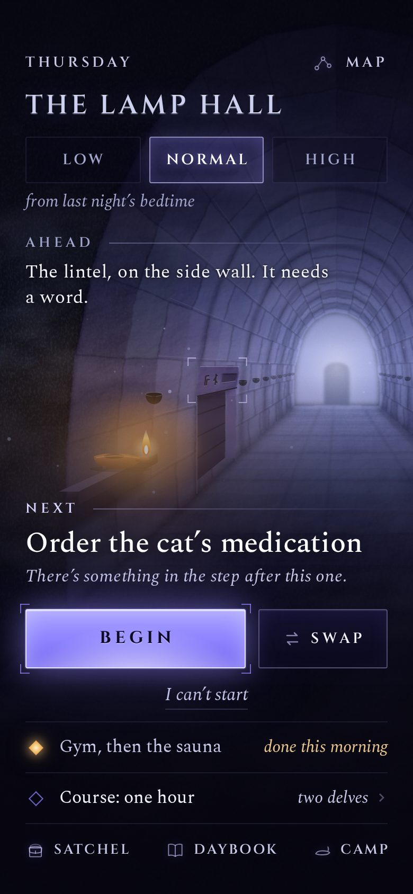
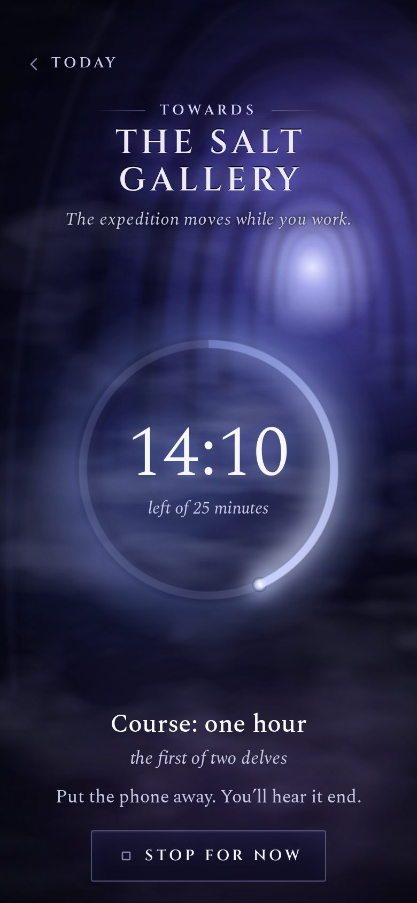
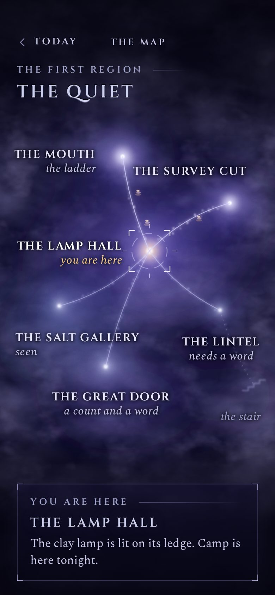
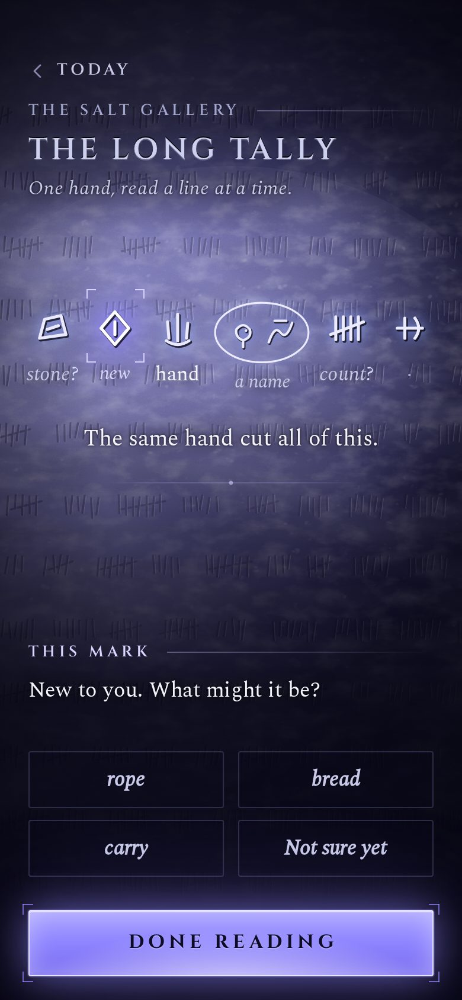
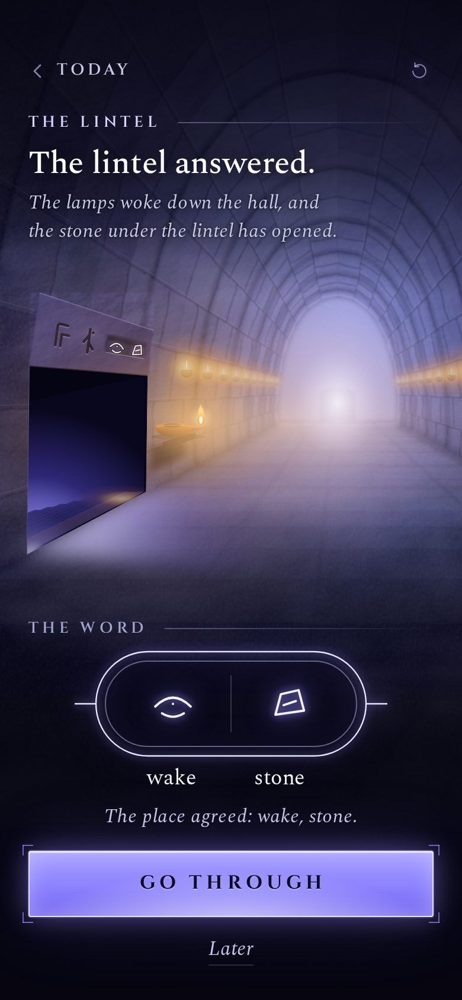
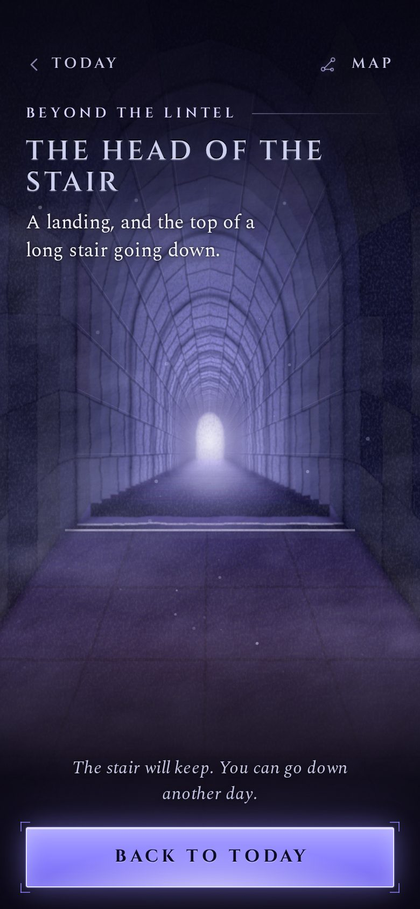
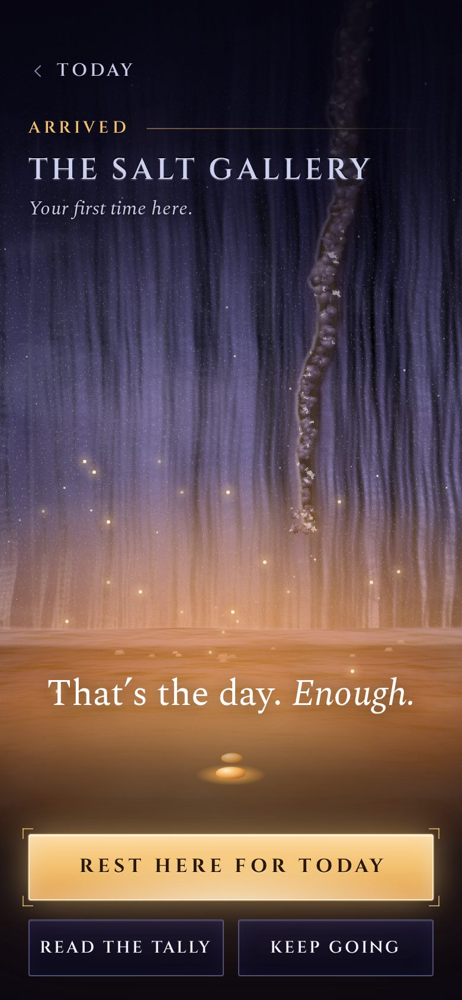
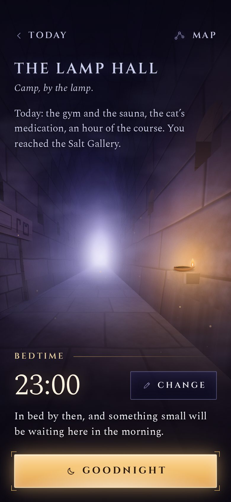
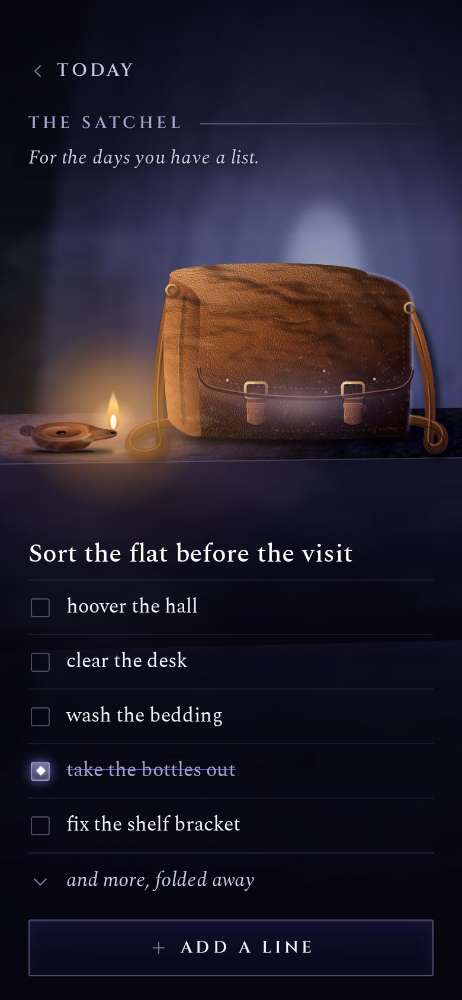
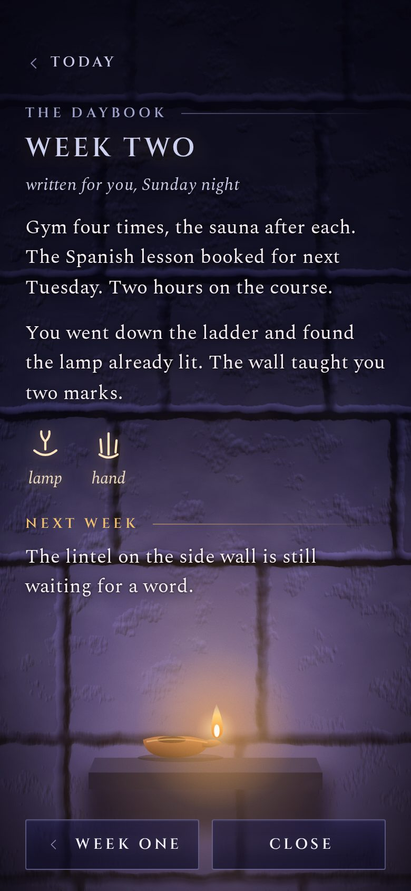

Direction D
The Combined Look
C’s purple world, full screen and never framed. B’s interface on top of it. A’s map. The day turning from purple to gold.
Every screen is a full-bleed painting in violet light and drifting haze. The controls are crisp boxes with fine light edges, on one centred grid. The main button is purple and glowing, until the day turns gold at the arrival and camp.

01The morningC’s hall and purple; B’s boxes, “Next” label, Low / Normal / High and line icons.
02A delveTowards the Salt Gallery: the ring fills as the tunnel and the nebula drift past.
03The mapA’s lit places in haze; B’s lines draw in. Tap a place for the crosshair and its box.
04A recordThe long tally in the open. Tap a mark, pick a guess.
05Cutting a wordThe word cut and boxed, the lintel opens, the lamps wake all the way down the hall.
06The head of the stairThrough the lintel: where “Go through” arrives.
07Day completeThe Salt Gallery, and the purple turns to gold. Enough for today.
08CampBy the lamp, with the hall going deep behind it. Bedtime.
09The satchelA painted satchel, softly glowing, and the jobs it holds. Nothing counted.
10The daybookWeek 2, written for you in plain English.
Static mock-ups for a phone (390 × 844; they also hold at 360 × 780). Marks and records are invented samples.